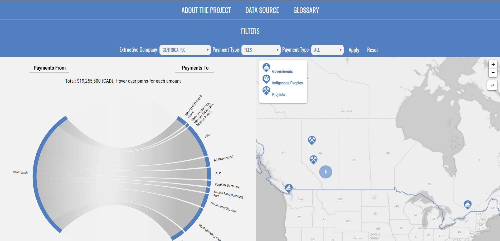

Hello, my name is Julia Conzon
In May 2016, I graduated from McGill University, Canada, with a B.A. in Geography and minors in Geographic Information Systems (GIS) and Anthropology. Through my hard work, discpline, and self-motivation I have harnessed a variety of skills in both quantitative/technical and qualitiative/social backgrounds. My work experiences as a freelance web developer and open data consultant has allowed me to develop websites, data visualizations, and web maps. On my spare time, I am active in the open web mapping community, teaching individuals, for example, about OpenStreetMap and Mapbox. My ultimate goal is to reduce the digital divide through opening up data and opening source code for all to use/repurpose.
Taiwan Trip
Introduction
In May 2016, I graduated from McGill University, Canada, with a B.A. in Geography and minors in Geographic Information Systems (GIS) and Anthropology. Through my hard work, discpline, and self-motivation I have harnessed a variety of skills in both quantitative/technical and qualitiative/social backgrounds. My work experiences as a freelance web developer and open data consultant has allowed me to develop websites, data visualizations, and web maps. On my spare time, I am active in the open web mapping community, teaching individuals, for example, about OpenStreetMap and Mapbox. My ultimate goal is to reduce the digital divide through opening up data and opening source code for all to use/repurpose.
Work Experience
- Statistics Canada (February 2017 - Present)
- Freelance Web Developer (November 2016 - Present)
- McGill University Research Assistant (May - August 2016)
Data Producton and Dissemination Officer
I am currently an open data consultant and web developer for various organizations, including OpenNorth and Johns Hopkins University's Center for Government Excellence (GovEx). My work includes visualizing open data through web mapping and D3.js as well as designing and building a directory for open data standards
Initiated my career focus in open data with Geothink's Open Data Standard Project
Coding Experience
Front-end: JavaScript, jQuery
Back-end: SQL, PostgreSQL, RESTful API, Node.js, Express
For web design, I have strong experience with CSS and its precursor's SASS and Burboun
I also have experience coding in D3.js, R, and Python, especially for using Esri products
GIS Experience
I have extensive experience collecting, handling, analyzing, and visualizing spatial data with both Esri and open web mapping products. I am familiar with the following software, spatial data, and coding languages: Esri, Mapbox JavaScript library, QGIS, Leaflet API, Google Maps API, KMLs, GeoJSON, shapefiles, imagery, OpenStreetMap, Postgres/PostGIS, ENVI, GDAL, GeoDa, SaTScan, D3.js, and R. I have experience with both raster and vector data
For a detailed resume, check out my LinkedIn account
Check out work deliverables I designed and developed. All code is accessible at my GitHub account Noznoc
Open Data Standards Directory: I am currrently working with Johns Hopkins University's Center for Government Excellence (GovEx) and McGill's Geothink on a project for open data standards. Various stackholders share the concern that there is no comprehensive database of open data standards. A directory to host and visualize the database provides an opprotunity to share knowledge and communication regarding open data standards. With this in mind, we decided to develop a minimum viable site for open data publishers and open data standard providors could share and disseminate information. My part of the project involves designing and developing (full stack) a site that visualizes data regarding open data standards. As I am new to site development, working on this project has taught me a lot. Through this experience, I have learned how to develop a Postgres database, a Jade and JQuery based front-end, and a Node.js and Express back-end, which was then all hosted on the cloud server Heroku. To fully experience the site, go here

Interactive Visualization of Payments: I worked on contract with Publish What You Pay Canada and Open North as a open data consultant and freelance web developer. International mining/oil extraction companies, such as Royal Dutch Shell, publish annual reports on their payments to government organizations and projects. For this project, I compiled data on 2015 payments from international extraction companies to government organizations and projects within Canada into a Google Sheet. I then standardized the data (e.g., converted currencies and units of energy) and then, using SQL, visualized the data into an interactive map and dashboard. In general, the visualizations (coded in javaScript and D3.js and embedded in HTML) shows where mining projects and government organizations (e.g., municipalities and Indigenous groups) are located within Canada and how much these projects and organizations are paid by extraction companies within 2015. The final deliverables included a database of the payments for 2015, with the ability to add future payments; and, as I synced the visualizations to the database, the visualizations can update automatically when new data is added to the database. Through this work, I became familiar with how these companies document/publish their payments to government organizations, what Canadian organizations receive payments from these companies, and where mining projects occur in Canada. To fully experience the interactive visualization, go here
Mixed Automated and Non-Automated Approaches to VGI
January 10, 2017
With mobile technology accessibility expanding worldwide, new strategies to collect data have emerged. Humans can now act as sensors through internalizing external physical or social phenomena via their mobile technology. For example, as a smartphone owner, I can remotely take a photo of an experience, say a sunset, and then I can publicize this experience through uploading the photo to a social media platform or website. Apart from the photo, I can also add additional information, such as a text description or geotag. In this case, the product, the publicly shared geotagged photo with a description, is volunteered geographic information (VGI), which is any user-generated content that is spatially referenced. My contribution is both explicitly georeferenced through the geotag, but it is also implicitly georeferenced through the description. VGI has been used in several projects as a mechanism to collect and analyze geographic information. This approach has created a new model for collecting geographic information that diverges from the traditional model, which relies on expert cartographers travelling to the field, surveying the land, and recording spatially-referenced attributes.
For example, the Commission for Environmental Cooperation (CEC) has developed the Local Environmental Observer (LEO) Network. This crowdsourcing project was developed to collect reports on unusual environmental phenomena in North America. Rather than hiring individuals to monitor, the LEO Network uses crowdsourcing as a mechanism to monitor the environment. Reports are recorded through a user placing a point on a map and adding specific information detailing the phenomenon. This allows the contributor to provide both explicit and implicit geospatial information. In this case the users are actively engaging in the project, but this is not necessarily the case for all projects that use VGI to collect geographic information. Rather some focus on automated, algorithmic, approaches to collect geographic information from individuals.
In a sense, there seems to be a separation in VGI research between machine learning and collaborative learning; in other words: unconscious versus conscious volunteered spatial data. The latter focuses on encouraging individuals to consciously volunteer their geographic data to a public forum. For instance, Humanitarian OpenStreetMap (HOT) has created a platform for OpenStreetMap (OSM) users to actively contribute to tasks necessary to complete missing maps for projects. Organizations who collaborate with HOT, such as MissingMaps, have come up with open source tools that make contributing easy, through seamless UI and gamification. Actively engaging participants can be valuable because local knowledge is considered and locals can feel empowered for contributing; moreover, conscious VGI can provide a more collaborative environment that encourages enthusiasts. However, these sorts of VGI projects can lack sustainable contributions; for instance; people lose interest over time when they are not fiscally compensated for their contributions.
As an alternative, automated methods via algorithms have become a new solution to offset low levels of active contributions. Automated processes will certainly benefit Smart Cities; for example, Google crowdsources Android GPS data to provide traffic reports, which over time could be integrated in self-driving cars to determine which routes to take to avoid traffic. In another case, machine learning can be used to detect buildings in satellite imagery. Automated methods will become extremely useful for real-time sensitive realities, such as a natural disasters.
Although there are benefits to automated approaches, there are critiques, particularly on validity because it is difficult to know whether the data is correct when contributors are not actively engaged. This can cause systematic errors in the long run. For example, a team can create an algorithm to mine and analyze Tweets that are spatially referenced. This team considered spatially referenced Tweets to be ones that are either geotagged or ones in which the user has a registered location, in other words, the user’s profile location. However, since you can geotag a tweet to a location that is not your current one, it is difficult to confirm whether a geotagged post is in the same location as where the user sent the post; moreover, just because a user’s account has an assigned location, does not mean they are actively there. I myself, have mined Tweets and spent several hours staring at my datasets overwhelmed with spatial uncertainty.
The debate between the advantages and disadvantages of machine and collaborative methodologies to harnessing VGI is emerging and growing, with recent literature even questioning whether volunteer is misleading. Whether or not one approach is the ultimate solution is not up for debate, rather I believe we need to recognize the importance of incorporating both in VGI projects because, as stressed above, VGI projects incorporate humans, technology, and geographic space. Consider Google Maps, although they focused most of their time using automated methods and their employees to create Maps, they are now expanding their platform to make it more suitable for crowdsourcing (similar to OSM). Although Google still is not opening up their geospatial data, they are attempting to account for local knowledge. They recently have started a project that encourages Google Map users to report accessibility for handicap individuals, this way Google Maps will consider accessibility for handicap individuals when routing directions.
- Julia Conzon
Opening Our Coordinates
December 30, 2016
In season three's finale, "Hated in the Nation,"" Black Mirror presented a dystopian reality of Smart Cities, particularly the aggregation of sensors within an urban geographic space (Ricker et al., 2014; Jara et al. 2014). Although dramatized, the episode highlighted the perils of unconsciously releasing personal geographic information for the public to freely access and repurpose. In summary, the fictional private corporation 'Granular Project' developed artificial swarm intelligence, or mini drone bees, in response to bee extinction. With the United Kingdom government funding a significant portion of the project, the government linked citizen’s ID photos and names with face recognition software so that the artificial bees, with their embedded cameras, served as a government tool for city surveillance. An employee who worked on the project took advantage of this security breach by programming the bees to track and kill human targets in an act of terrorism. Initially unbeknownst to the general public, these targets were chosen through the hashtag #DeathTo that would trend on a Twitter-like platform. With knowledge of the target's whereabouts from a target's cellphone's International Mobile Station Equipment Identity (IMEI), the swarm of intelligence would automatically locate, swarm, and kill the target.
Yes, it is both dramatic and terrifying, but it is also plausible as our society continues to become more integrated with mobile technology, particularly smart phone applications that require access to cell phones’ location to provide services, such as Uber or PokemonGo. Mobile applications today leverage the complex relationship between a human, their mobile technology, and their surrounding physical and social infrastructures in order to provide location based services (LBS). In this relationship, a human acts as a sensor; they internalize external physical and/or institutional phenomena and then actively or passively publish these observations through their mobile GPS, camera, recorder, and internet access (Goodchild 2008). In other words, the human provides volunteered geographic information (VGI). For example, the Google Maps and Uber apps both require their users to access the internet with their mobile devices and provide their explicit location via their mobile’s GPS; in exchange, Google Maps provides route directions, including public transportation and bike routing, while Uber provides a transportation service. These apps are even expanding their market. For example, Google Maps is starting to include indoor routing and Uber is expanding as a delivery service.
We receive services from opening our coordinates, but we also risk losing our privacy. Consider the proliferation of check-ins on November 1, 2016, at Standing Rock Reservation, in which the police were accused of monitoring Facebook users' check-ins (Levin and Woolf 2016). Facebook users' geotagged posts were reportedly repurposed by the police to monitor protesters at Standing Rock Reservation. Although it is still unclear whether the police were correctly accused, as an act of global solidarity and technological outreach, Facebook users checked into Standing Rock to act as decoys.
When we blindly grant mobile applications access to our location, we are allowing an unknown public audience to repurpose our VGI. Whether or not the police monitored the Standing Rock check-ins, protestors who checked into Standing Rock did not expect that their check-ins would be monitored by the police. That being said, "slacktivism" occurred, where modern technology allowed people from all across the globe who share similar values on a geographic place to virtually amass (CBC 2016). So, rather than continue the dooms-day narrative introduced in Black Mirror, one which highlights the privacy perils of blindly releasing social media posts and your VGI to the public, we can create a new narrative that redefines privacy based on the complex relationship between humans, technologies, and geographic space.
- Julia Conzon
Blog on State of the Map Brussels 2016
October 17, 2016
I recently attended the State of the Map (SOTM) in Brussels, Belgium. SOTM is a conference that discusses various social, political, and technical components of OpenStreetMap (OSM), a mapping website that aims to map all of Earth’s landscapes, such as social and physical infrastructures. You may wonder, doesn’t Google already do this? In short, yes, Google has done an efficient job producing Google Maps and its associated routing/navigation software; but it still has its limitations. First, Google Maps has several unmapped locations. As addressed by SOTM’s keynote speaker Allan Mustard, US Ambassador to Turkmenistan, if you compare the map of Ashgabat, Turkmenistan, between Google Maps and OSM, you will certainly see a difference (Figure 1). Secondly, Google’s spatial data is not open, which hampers equality and empowerment. Thanks to Ambassador Mustard’s initiative to use OSM, he and several Ashgabat locals have mapped out the remote city and now the citizens can use this open spatial data for various socio-economic purposes. For example, prior to the OSM maps, Ashgabat taxi drivers did not know where all the gas stations were located. Now, with a local map openly accessible to all citizens, Ambassador Mustard says taxi drivers are more efficient at navigation. In short, OSM provides an open-source platform that allows worldwide internet users to contribute geographic features of anywhere from anywhere, which then can be freely downloaded by anyone to use.
Government Support
As seen with Ambassador Mustard, there are some within government who do support crowdsourced mapping initiatives. With Federal funding, Statistics Canada has announced a pilot crowdsourcing project starting in October 2016 to use OSM’s platform to crowdsource building data. It was also exciting to see the government presence at the conference (such as a member of Statistics Canada) and government partnerships such as between Etalab (a French government organisation) and OSM France.
Through one of the Birds of a Feather (BoF) discussions I participated in, it is apparent that OSM’s platform is positively reshaping certain government’s perceptions on how to produce open data. However, a presentation from Usman Latif, a journalist from Pakistan and the founder of Open Humanitarians (formerly DigitalHumanitarians.pk), reminded the SOTM audience that not all governments are democratizing their data. In Pakistan, broad laws have made unauthorised mapping activities by locals illegal. Usman risks penalties if he encourages local mapping, but he explained that to follow the law, he encourages students and youth to map parts of the world outside Pakistan and “to be a part of a global humanitarian society.” Usman’s goal is to proliferate a vibrant community of humanitarian mappers in Pakistan who can eventually use their mapping skills to participate in the global humanitarian society, particularly in disaster response. With Pakistan prone to earthquakes and floods, Usman hopes these educated Pakistanis will contribute to domestic disaster responses once Pakistan opens up local mapping. With this mindset, Usman now educates university students in Pakistan on using OSM. Although not all governments are supportive of open spatial data, Usman’s goals illustrate how educating locals about OSM and encouraging them to contribute to global (digital) humanitarian society can promote local empowerment, something I believe is a worthwhile alternative.
Smart Cities
Apart from social and political components of OSM, many presentations also addressed technical components; more specifically, new automated tools for OSM users. Some of these tools can be used to promote smart cities. Christian Quest and Michel Blancard from Etalab presented OpenSolarMap. This presentation discussed using machine learning to identify which rooftops throughout France are most suitable for solar panel instalment based on rooftop aspect direction (north, south, west, east, or flat). Although there are still some variables that are excluded (e.g., solar intensity or rooftop angle), the software does highlight a more efficient methodology.
There were also three presentations proposing different methods to map indoor areas. Indoor data can be used for a series of smart city applications, such as geomarketing. For instance, a mobile app could link indoor routing with a store’s product information to direct a customer to the product they want in the store while also encouraging them to pass by other similar products. Although each presentation proposed slightly different methodologies to map out indoor areas, all three shared similar concerns on mapping certain features, such as whether a stairway takes you up or down a floor. There were also different stances on opening up the indoor data to the public. For example, French National Railway Company (SNCF) have mapped the interiors of all popular stations in Paris; but, instead of this data being openly accessible to the public, they combined their data with OSM data to create an app that provides maps of these stations’ interiors. Unfortunately, this app is not available for free, which disappointed myself and my neighbouring audience members. On the other hand, Roland Olbricht’s and Roland Wagner’s workshop taught the audience how to map building interiors with OpenStationMap, which is an OSM project that aims to incorporate indoor mapping onto OSM’s station polygons. As Google Maps has also introduced indoor mapping, Carto Cité’s presentation on indoor mapping reminded the audience, ‘We can’t leave it all to Google’ (Figure 3). If we leave indoor mapping to a few corporations, data accessibility may be restricted for commercial interests.
Conclusion
Overall, the State of the Map presented two trends: collaborative learning and machine learning. The latter trend reflects discussions on automation of mapping processes, while the former trend reflects discussions on on-the-ground mapping with locals. Although these trends seem diverging, OSM’s platform is capable of incorporating both. As OSM Foundation’s Mikel Maron mentioned, it is about being “a part of the database.” Whether it be building technical tools to ease mapping complex areas or educating locals to contribute geospatial data, both trends aim to provide open geospatial data for all to use.
This collaborative environment has ultimately encouraged me to sustain the initiative for open spatial data. With the knowledge I have gained from the conference, I will introduce several new activities to Maptime MTL. Feel free to contact me at juliaconzon@gmail.com or maptimemtl@gmail.com if you are interested in participating or collaborating. You can also connect with me on Twitter @julconz and LinkedIn.
- Julia Conzon